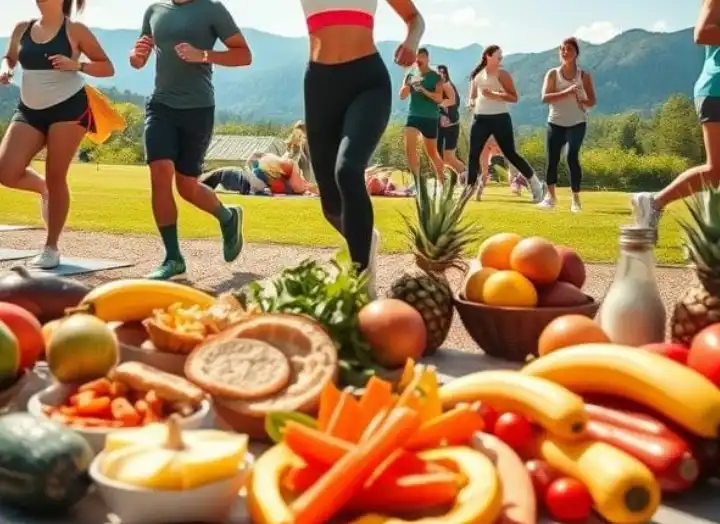

Gezonde Voeding: De Basis
Gezonde voeding draait niet om strenge diëten, maar om balans. Door te kiezen voor natuurlijke,
onbewerkte producten geef je je lichaam de brandstof die het nodig heeft.
Denk aan groenten, fruit, volkoren producten, gezonde vetten en voldoende eiwitten.

Lifestyle & Mindset
Een gezonde lifestyle gaat verder dan voeding alleen. Slaap, stressmanagement en beweging spelen een even grote rol. Kleine, haalbare stappen zorgen voor duurzame verandering.
